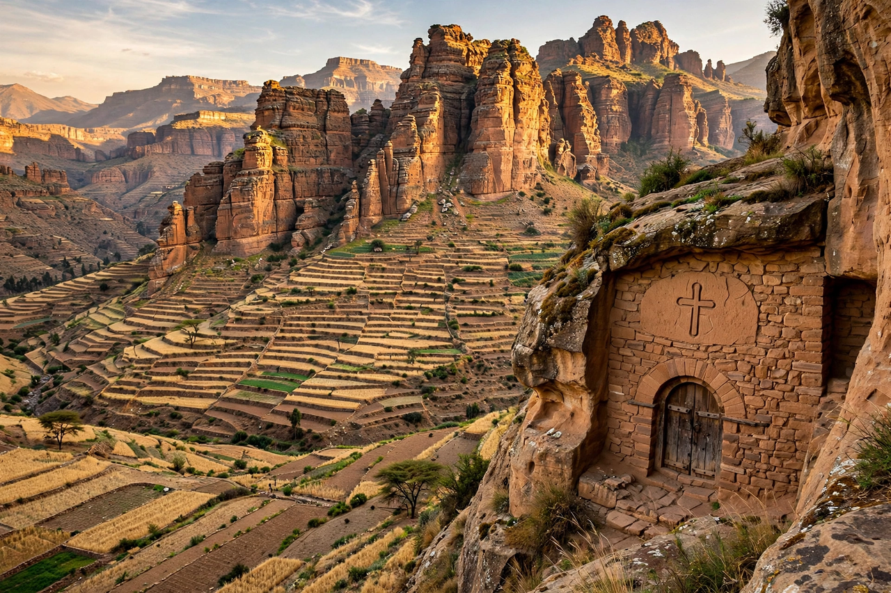

| Tigray Region | |
|---|---|
 | |
| Country | Ethiopia |
| Capital | Mekelle |
| Area | about 50,000 km² |
| Population | about 5.4–6 million (estimates vary) |
| Languages | Tigrinya (official), Amharic |
| Largest religion | Ethiopian Orthodox Christianity |
The Tigray Region is the northernmost regional state of Ethiopia. Its capital and largest city is Mekelle. Tigray is the homeland of the Tigrayan people and the historic heartland of Ethiopian civilisation: the ancient kingdom of Aksum, whose stelae and ruins survive at Axum, rose here, and the region's rock-hewn churches and the Semien Mountains mark its rugged highland landscape.
Tigray formed the core of the Aksumite Empire (c. 100–960 AD), one of the great powers of the ancient world, and retained a distinct identity through the Zagwe and Solomonic periods. Under the 1995 Ethiopian constitution it became a regional state within the ethnic federal system. The Tigray People's Liberation Front (TPLF), which began its insurgency in Tigray in 1975, led the coalition that ruled Ethiopia from 1991 to 2018.
From November 2020 to November 2022, Tigray was the centre of a devastating war between the TPLF-led Tigray forces and the Ethiopian federal government, allied with Eritrean forces and Amhara militias. The conflict caused mass casualties, displacement of millions, and a humanitarian crisis and famine conditions under blockade. The Pretoria Cessation of Hostilities Agreement of 2 November 2022 ended major fighting, and an interim regional administration was installed in 2023.
The region is dominated by highlands between 1,000 and 4,500 metres, cut by deep river gorges including the Tekezé. Agriculture — teff, sorghum, and sesame — employs most of the population, and the region has significant gold mining. Western Tigray's status remains disputed with the Amhara Region.